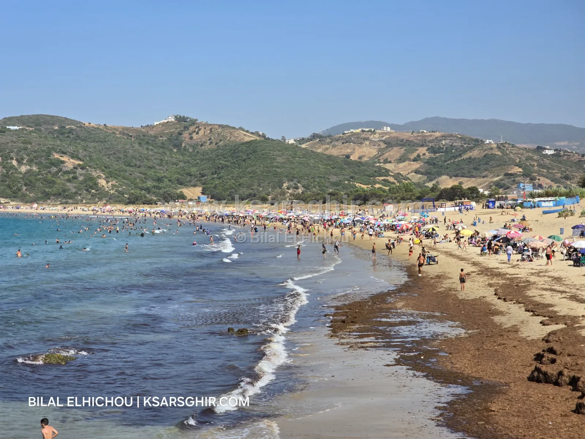

🏖️ Playas
Playa de Oued Alian: gran playa de arena con corrientes débiles a 15 km de Alcazarseguer, socorristas de junio a septiembre, quioscos y restaurantes de temporada, duchas y aseos, autobuses I3 e I12.

Una playa de arena grande y amplia con corrientes débiles, a 15 km de Alcazarseguer camino de Tánger. En verano: socorristas de junio a septiembre, quioscos y restaurantes de temporada, duchas y aseos, aparcamiento de pago, y el centro de Oued Alian muy cerca para restaurantes y tiendas. Su tamaño la hace cómoda incluso los días de más gente.
La playa de Oued Alian está en la carretera de la costa entre Tánger y Alcazarseguer, al oeste de Alcazarseguer, a unos 15 km, entre la playa de Alcazarseguer y las playas de Sidi Kankouch. Pertenece al municipio de Ksar Sghir, provincia de Fahs-Anjra.
Junto a la playa está el centro de Oued Alian, con restaurantes y tiendas a los que se puede ir a cualquier hora. Desde la arena se ve el Estrecho y el paso constante de barcos entre el Mediterráneo y el Atlántico.
La gran ventaja de Oued Alian es su tamaño: una playa de arena bastante grande y amplia, que acoge a mucha gente sin agobios, incluso los fines de semana de verano. Es una buena opción para familias que buscan espacio para los niños, para jugar al balón en la arena y para pasear junto al mar.
La arena es fina y las corrientes son débiles, así que el baño es cómodo dentro de la zona vigilada.
Como en el resto de la zona, las olas son normales con Levante y crecen un poco con Poniente: ahí hay que prestar más atención, sobre todo con los niños. En verano las olas suelen ser muy buenas para el baño. Antes de salir, consulta El mar hoy: dirección del viento, altura de las olas y valoración para el baño.
La larga franja de arena da a Oued Alian una vista abierta al Estrecho, con barcos pasando todo el día. Las mejores fotos se hacen a primera hora, con la playa vacía, y al final del día, cuando la luz se suaviza y las sombras se alargan sobre la arena.
Arena amplia, corrientes débiles y socorristas en verano hacen de Oued Alian una playa adecuada para familias. Para un día sin sustos:
Los días con más movimiento son los fines de semana de agosto, pero el tamaño de la playa hace que se note menos que en playas más pequeñas. Junio, septiembre y los días laborables son los más tranquilos.
En la carretera de la costa entre Tánger y Alcazarseguer, a unos 15 km al oeste de Alcazarseguer.
Sí, de junio a septiembre.
Sí, quioscos y restaurantes de temporada en la playa, y restaurantes y tiendas en el cercano centro de Oued Alian.
Sí, las líneas I3 e I12 desde la estación de tren de Tánger pasan cerca.
Más los fines de semana de agosto, pero es una playa grande con sitio para muchos.
Los aparcamientos son de pago.